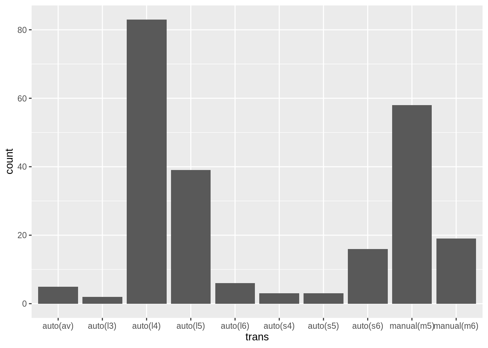
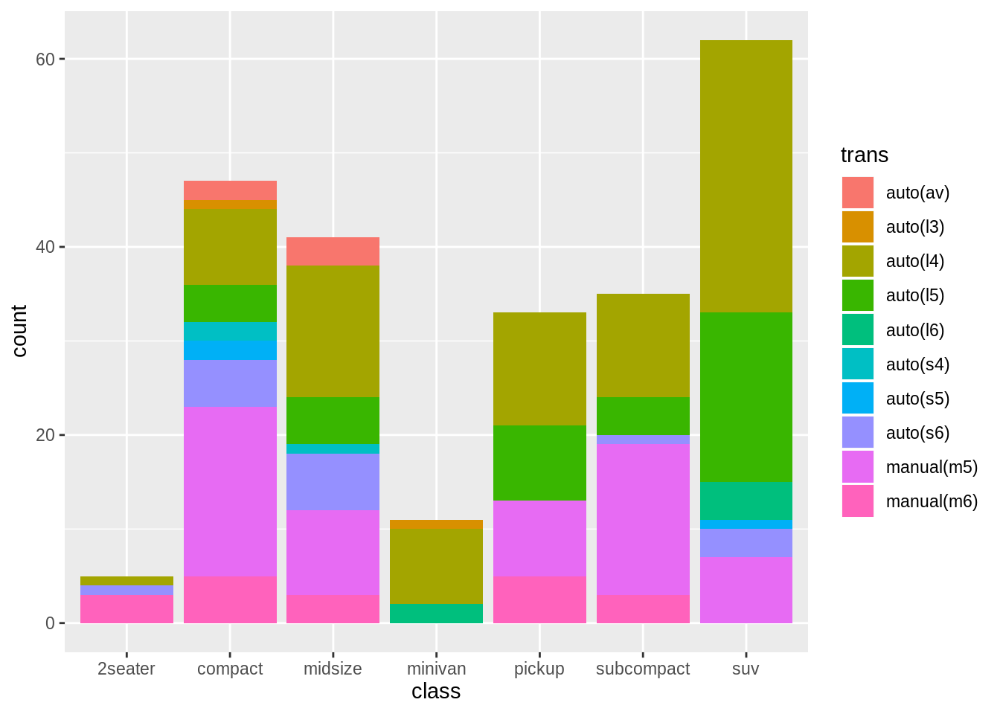
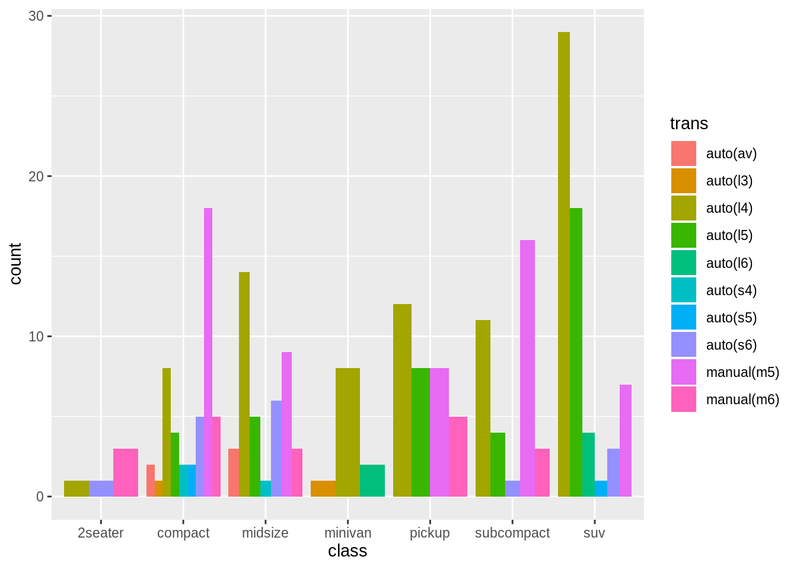
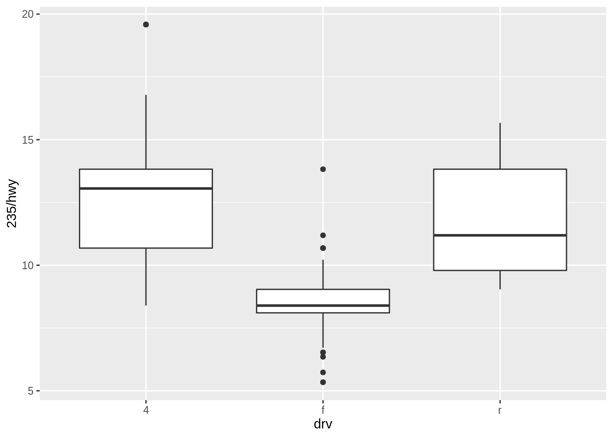
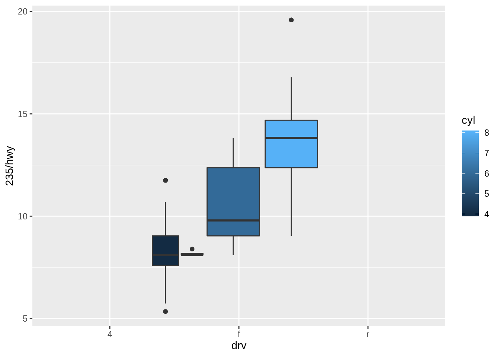
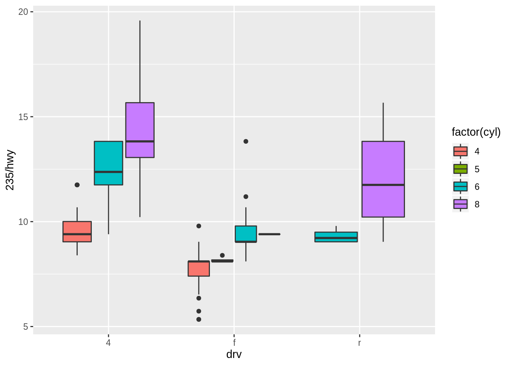
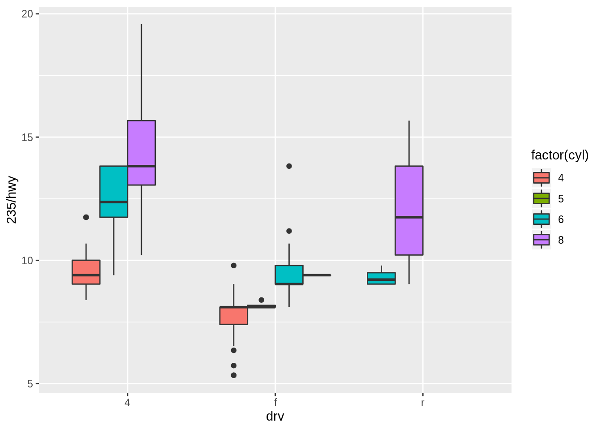

Position adjustments
Kirill Müller, cynkra GmbH
Gears
What’s the most prevalent number of gears for manual or automatic transmissions?
ggplot(data = mpg, aes(x = trans)) +
geom_bar()► Solution:
Transmission type and number of gears are encoded in the same variable, a simple bar plot helps:
ggplot(data = mpg) +
geom_bar(mapping = aes(x = trans))
Visual inspection reveals that it’s four gears for automatic, and five gears for manual transmission.Discriminate by car class
Use the fill aesthetic to further discriminate by car class. Can you explain why the parts representing transmission types are stacked on top of each other?
ggplot(data = mpg, mapping = aes(x = class, _____))► Solution:
ggplot(data = mpg) +
geom_bar(mapping = aes(x = class, fill = trans))
The default value for theposition argument to geom_bar() is "stack". This means that related geoms are stacked on top of each other.
Show drivetrain types side by side
Apply a position adjustment to make it easier to detect missing combinations of drivetrain and car class.
ggplot(data = mpg, mapping = aes(x = class, _____)) +
geom_bar(position = "___")► Solution:
ggplot(data = mpg) +
geom_bar(
aes(x = class, fill = trans),
position = "dodge"
)
To use uniform width, specify position_dodge(preserve = "single"):
ggplot(data = mpg) +
geom_bar(
aes(x = class, fill = trans),
position = position_dodge(preserve = "single")
)Boxplot
Draw a boxplot of highway fuel economy versus drivetrain. Is fuel economy also affected by the number of cylinders?
Hint: Use factor() as necessary.
► Solution:
I’m using liters per 100 km as measure for fuel economy here.
ggplot(data = mpg) +
geom_boxplot(mapping = aes(x = drv, y = 235 / hwy))
Forward drivetrains seem much more economical. Does the number of cylinders play a role? I’ll try the “fill” aesthetic:
ggplot(data = mpg) +
geom_boxplot(mapping = aes(x = drv, y = 235 / hwy, fill = cyl))
No dice. Do I also need group = ?
ggplot(data = mpg) +
geom_boxplot(
mapping = aes(
x = drv,
y = 235 / hwy,
fill = cyl,
group = cyl
)
)
The legend reveals that cyl is a continuous variable. I’ll use its categorical equivalent, because the range is very limited.
ggplot(data = mpg) +
geom_boxplot(
mapping = aes(
x = drv,
y = 235 / hwy,
fill = factor(cyl)
)
)
The default position setting looks good, we use position_dodge(preserve = "single") again for uniform width:
ggplot(data = mpg) +
geom_boxplot(
mapping = aes(
x = drv,
y = 235 / hwy,
fill = factor(cyl)
),
position = position_dodge(preserve = "single")
)
Doesn’t look useful.More exercises
Find more exercises in Section 3.8.1 of r4ds.
Copyright © 2019 Kirill Müller. Licensed under CC BY-NC 4.0.